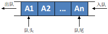

队列 (queue) 是一种特殊的线性表，特殊之处在于它只允许在表的前端（front）进行删除操作，而在表的后端（rear）进行插入操作，和栈一样，队列是一种操作受限制的线性表。进行插入操作的端称为队尾，进行删除操作的端称为队头。

队列符合先进先出[FIFO]的原则。因为要排队的第一个项目，最终将是第一个要出列的项目，如在现实生活中的队列，先来的站在队列前面，后来的就只能站在队列后面啦。
基本功能介绍 队列有两种实现形式，分为两种：数组 和链表 。
在接下来的内容里，我们将以链表的形式实现队列，逐步介绍具体功能是如何实现的。
1. 创建 Node 类
创建一个 Node 的类，作为基础数据结构：链点，并初始化对应的内参。
具体实现代码如下
队列有两种实现形式，分为两种：数组 和链表 。
在接下来的内容里，我们将以链表的形式实现队列，逐步介绍具体功能是如何实现的。
1. 创建 Node 类
创建一个 Node 的类，作为基础数据结构：链点，并初始化对应的内参。
具体实现代码如下
1 2 3 4 class Node (object def __init__ (self,elem,next =None ): self.elem = elem self.next =next
2. 创建 Queue 类
创建一个 Queue 的类，以链表形式的队列，并初始化对应的内参。
具体实现代码如下：
1 2 3 4 class Queue (object def __init__ (self ): self.head = None self.rear = None
3. 添加 is_empty 函数
添加一个 is_empty 的函数，功能是判断队列是否为空
具体实现代码如下：
1 2 def is_empty (self ): return self.head is None
4. 添加 enqueue 函数
添加一个 enqueue(elem) 函数，功能是往队列中添加一个 elem 元素
流程如下：
Vertex vtx = new Vertex(v) 初始化一个新的点
tail.next = vtx 队列尾部的后继是这个新的点
tail = vtx 然后让队列尾部指针指向这个新的点
效果演示：往已知队列[29,9,53]里面添加一个 80 元素
具体实现代码如下：
1 2 3 4 5 6 7 8 def enqueue (self, elem ): p = Node(elem) if self.is_empty(): self.head = p self.rear = p else : self.rear.next = p self.rear =p
5. 添加 dequeue 函数
添加一个 dequeue() 函数，功能是从队列头部删除一个元素
流程如下：
先判断队列是否为空，为空即退出 dequeue 操作，不为空即继续后续操作
将队列头部元素赋值到 result 变量里
改变队列的头部指针的位置，然后返回 result
效果演示：对已知队列[29,9,53,80] 删除头部元素
具体实现代码如下：
1 2 3 4 5 6 7 def dequeue (self ): if self.is_empty(): print ('Queue_is_empty' ) else : result = self.head.elem self.head = self.head.next return result
6. 添加 peek 函数
添加一个 peek() 函数，功能是查看队列头部的元素
流程如下：
判断队列是否为空，为空即返回 NOT_FOUND
队列如果不为空，返回队列头部元素
具体代码实现如下:
1 2 3 4 5 def peek (self ): if self.is_empty(): print ('NOT_FOUND' ) else : return self.head.elem
7. 添加 print_queue 函数
添加一个 print_queue() 函数，功能是展现队列的元素
1 2 3 4 5 6 7 8 def print_queue (self ): print ("queue:" ) temp=self.head myqueue=[] while temp is not None : myqueue.append(temp.elem) temp=temp.next print (myqueue)
最终代码如下：
1 2 3 4 5 6 7 8 9 10 11 12 13 14 15 16 17 18 19 20 21 22 23 24 25 26 27 28 29 30 31 32 33 34 35 36 37 38 39 40 41 42 43 44 45 class Node (object def __init__ (self, elem, next =None ): self.elem = elem self.next = next class Queue (object def __init__ (self ): self.head = None self.rear = None def is_empty (self ): return self.head is None def enqueue (self, elem ): p = Node(elem) if self.is_empty(): self.head = p self.rear = p else : self.rear.next = p self.rear = p def dequeue (self ): if self.is_empty(): print ('Queue_is_empty' ) else : result = self.head.elem self.head = self.head.next return result def peek (self ): if self.is_empty(): print ('NOT_FOUND' ) else : return self.head.elem def print_queue (self ): print ("queue:" ) temp = self.head myqueue = [] while temp is not None : myqueue.append(temp.elem) temp = temp.next print (myqueue)
复杂度分析 队列属于常见的一种线性结构，对于出队和进队而言，时间复杂度都为 O(1)
队列的其他实现 队列有两种实现形式，数组和链表。我们在前面已经介绍了如何用链表实现的队列，这里就不再赘述，直接给出另一种用数组实现的队列代码，供大家学习参考。
形式：用数组实现
1 2 3 4 5 6 7 8 9 10 11 12 13 14 15 16 17 18 19 class Queue (): def __init__ (self ): self.entries = [] self.length = 0 self.front = 0 def enqueue (self, item ): self.entries.append(item) self.length = self.length + 1 def dequeue (self ): self.length = self.length - 1 dequeued = self.entries[self.front] self.front += 1 self.entries = self.entries[self.front:] return dequeued def peek (self ): return self.entries[0 ]
作业 设计队列的实现( 在这里我们要求用之前介绍的链表形式实现 )
在队列中实现这些步骤：
初始化创建 Node, Queue 类
依次添加 21 35 58 13 进队列
返回队列头部元素
删除此时队列头部元素
返回此时队列头部元素
参考代码 注意：请务必自己独立思考解决问题之后再对照参考答案，一开始直接看参考答案收获不大。
参考代码如下
1 2 3 4 5 6 7 8 9 10 11 12 13 14 15 16 17 18 19 20 21 22 23 24 25 26 27 28 29 30 31 32 33 34 35 36 37 38 39 40 41 42 43 44 45 46 47 48 49 50 51 52 53 54 55 56 57 58 class Node (object def __init__ (self, elem, next =None ): self.elem = elem self.next = next class Queue (object def __init__ (self ): self.head = None self.rear = None def is_empty (self ): return self.head is None def enqueue (self, elem ): p = Node(elem) if self.is_empty(): self.head = p self.rear = p else : self.rear.next = p self.rear = p def dequeue (self ): if self.is_empty(): print ('Queue_is_empty' ) else : result = self.head.elem self.head = self.head.next return result def peek (self ): if self.is_empty(): print ('NOT_FOUND' ) else : return self.head.elem def print_queue (self ): print ("queue:" ) temp = self.head myqueue = [] while temp is not None : myqueue.append(temp.elem) temp = temp.next print (myqueue) if __name__ == "__main__" : queue = Queue() queue.enqueue(21 ) queue.enqueue(35 ) queue.enqueue(58 ) queue.enqueue(13 ) queue.print_queue() print (queue.peek()) queue.dequeue() queue.print_queue() print (queue.peek())